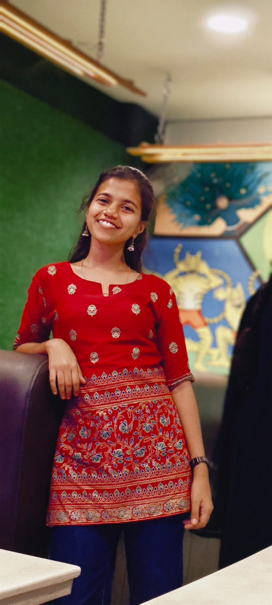

FULL-STACK • AI/ML • COMPUTER VISION
Hi, I'm Kanishka.
Software Developer.
Software-focused engineering graduate with hands-on experience in Full-Stack Development and AI/ML applications, building practical solutions using modern web technologies, machine learning, computer vision and application development tools.
🏆 SIH 2023Hardware Finalist
☕ JavaBackend Development
💻 Full-StackProject Experience

Building useful software,
one project at a time.
const focus = "build + learn";
01
About Me
I'm a software-focused engineering graduate with hands-on experience in Full-Stack Development and AI/ML applications.
I enjoy building practical, real-world solutions using modern web technologies, machine learning, computer vision, and application development tools. My project experience includes full-stack applications, AI-powered systems, Android applications, and computer vision solutions.
Primary focus Full-Stack Development / AI-ML
Also work with Computer Vision / Android / Python
Databases SQL / MongoDB / SQLite
Goal Full-Stack Developer / AI-ML Applications
02
Skills
Web & Backend
Databases & Cloud
Tools
03
Featured Projects
01🏆 SIH 2023 FINALIST
School Zone Traffic Control System
IoT-enabled traffic monitoring solution focused on improving safety around school zones. Built real-time vehicle tracking/reporting, a data streaming and visualization dashboard, and automated safety alerts for potential risks.
Ask for project details →02ANDROID
Mini Volunteering App
Android application developed using Kotlin in Android Studio for managing volunteering events, registrations and volunteer participation.
03COMPUTER VISION
Missing Person Identification from CCTV
Built a face recognition system using MTCNN and DeepFace to detect and verify individuals in group images, with feature extraction and similarity matching using OpenCV techniques.
04JAVA BACKEND
Spring Boot Todo Application
A REST-oriented Todo application built to strengthen Java backend fundamentals, application structure and CRUD development.
05PYTHON
Interactive Chatbot
Interactive chatbot project developed during a virtual internship, focusing on user interaction and Python application development.
06VIRTUAL INTERNSHIP
Tic-Tac-Toe Game
Interactive Tic-Tac-Toe game developed during a virtual internship, focusing on Python programming, game logic and user interaction.
04
Experience & Learning
Raiden Studios — On-site
Tools Used: Unity, Kinect, Virtual Reality (VR), C# (Unity scripting)
Developed a VR-based Gamified Fitness Application using Unity and Kinect for real-time motion tracking and interactive user experience.
Implemented movement comparison algorithms to evaluate user exercises against predefined trainer models, generating accuracy-based feedback.
Designed a real-time performance evaluation system to improve exercise correctness and user engagement through instant insights.
Enhanced system usability by optimizing motion detection, UI interactions, and overall application performance.
CodSoft — Virtual Internship
Worked on an Interactive Chatbot and Tic-Tac-Toe Game using Python while developing practical application development skills.
Smart India Hackathon 2023
Participated in the Hardware Edition and developed the School Zone Traffic Control System for a real-world safety problem.
Innovation & Entrepreneurship Bootcamp
Participated in a post-hackathon bootcamp focused on innovation, entrepreneurship and taking technical ideas further.
05
Achievements & Certifications
🏆
Smart India Hackathon 2023
Hardware Edition Finalist
📊
NPTEL Big Data Analytics
Certificate completed
☁️
AWS Solution Architect
Beginner course completed
🚀
Innovation & Entrepreneurship
Bootcamp participant
06 • LET'S CONNECT
Have an opportunity?
Let's talk.
I’m open to fresher opportunities in Full-Stack Development, AI/ML applications and software development.